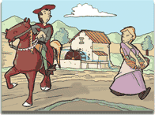

|
|
|

A l'Edat Mitjana s'inicia
l'estructura d'organització
a través del Terme Parroquial,
la Universitat dels Parroquians,
el Comú representat per prohoms i síndics,
o la Cofraria dels Homes Forans.
|
|
Il·lustració
: Florenci
|
|